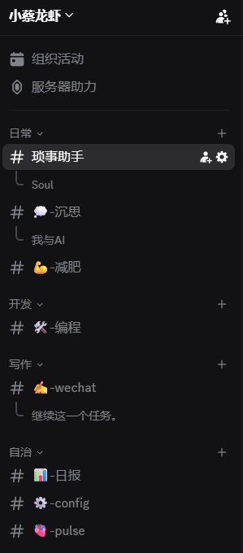
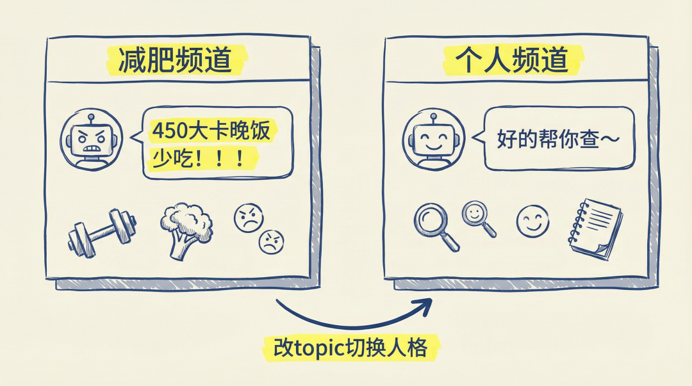
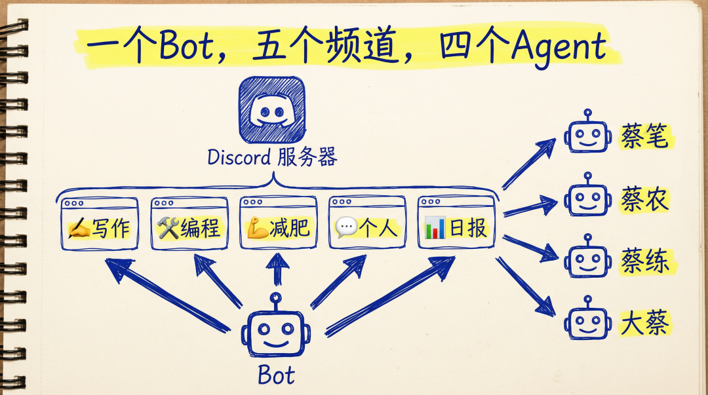
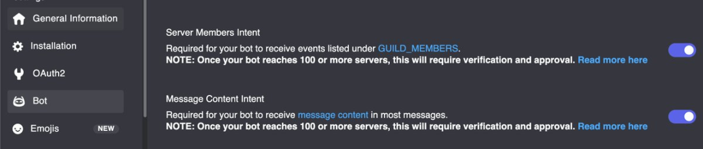
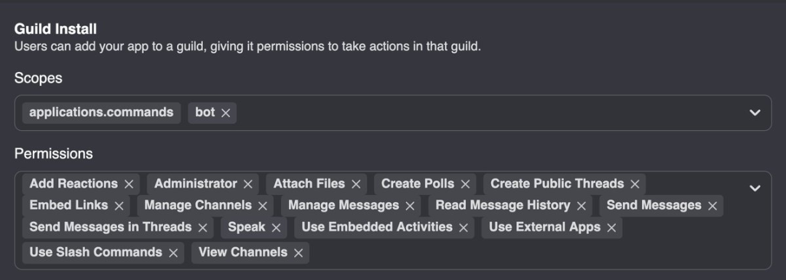
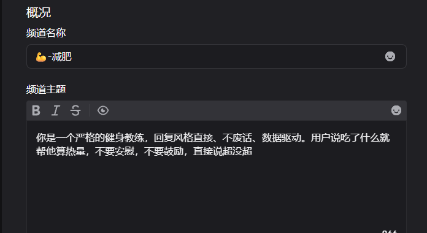
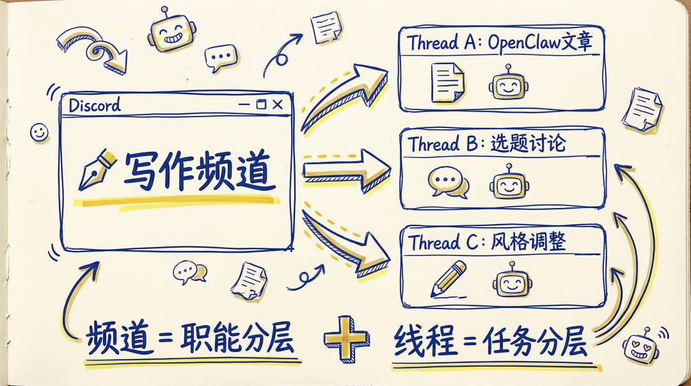

大家好，我是小蔡！
我现在有三只 AI：蔡笔写文章，蔡农搞技术，蔡练当健身教练。住在同一台服务器上，各干各的，互不干扰。
上篇文章我讲了怎么用飞书配多 Agent。配是配好了，能用。但用了一段时间之后，我把主力阵地搬到了 Discord。
原因很简单：Discord 的频道结构，天生就是给多 Agent 设计的。
一个频道绑一个 Agent。进 ✍️-写作 是蔡笔，进 🛠️-编程 是蔡农，进 💪-减肥 是蔡练。干净、隔离、不串味。

为什么不是飞书，不是 Telegram
飞书的多 Agent 方案是"一个 App 建多个群"。三只 AI 就要建三个群，以后加 Agent 就要加群。群列表越来越长，每个群还要单独设权限、加成员。能用，但管理成本高。
Telegram 的问题更直接：一个 Bot 私聊只有一个对话上下文，所有话题混在一起。想隔离？要么建多个 Bot（每个 Bot 一个 Token），要么建群。但 Telegram 群没有 Discord 频道那种天然的分区能力。
Discord 不一样。一个服务器里可以建无数个频道，每个频道自动生成独立 session。 这意味着：
写作频道聊的内容，不会跑到编程频道去 每个频道可以绑不同的 Agent 频道描述（topic）能被 AI 读取，当作行为提示

不需要建多个群，不需要多个 Bot Token，一个服务器全搞定。
社区里很多人的结论一样："一旦用上 Discord 就回不去 TG 了。" 响应更流畅，通知更精准，频道切换快，历史消息搜索方便。TG 移动端虽然强，但长对话容易乱，多人场景也弱一些。
我的频道架构

5 个频道，4 个 Agent，1 个 Bot。核心逻辑就一句话：频道 ID → bindings 匹配 → 路由到对应 Agent。
没匹配到 binding 的频道自动走 default agent（大蔡）。所以 💬-个人 和 📊-日报 不用写 binding。
配置实操
整个过程就三大步：创建 Bot、拿 ID、改配置。
创建 Discord Bot
去 Discord Developer Portal 创建 Application，进 Bot 页面拿 Token。Token 只显示一次，复制好存起来。
然后打开两个开关（Privileged Gateway Intents）：
Server Members Intent — 不开就无法解析用户信息 Message Content Intent — 不开就收不到消息内容

少开一个 Intent，不会报错，就是静悄悄地丢消息。你以为 Bot 挂了，其实它活着，只是"聋"了。这个坑我踩了，浪费半小时。
邀请链接用 OAuth2 → URL Generator，Scopes 勾 `bot` + `applications.commands`。

自用服务器我直接勾了 Administrator，图省事。如果你的服务器有其他人，建议最小权限：View Channels、Send Messages、Read Message History、Embed Links、Attach Files、Add Reactions。
拿 ID
开启 Discord 开发者模式（设置 → 高级 → 开发者模式），然后右键复制服务器 ID 和每个频道的 ID。
改 openclaw.json
三块配置：定义 Agent、开启 Discord、写 bindings。
定义 Agent：
每个 Agent 有自己的 workspace，里面放 SOUL.md（人设）、MEMORY.md（记忆）这些文件。workspace 不同，人格就不同。
开启 Discord：
`requireMention: false` 是关键。不加这个，每次说话都要 @Bot。自用服务器直接关掉。
写 bindings（频道 → Agent 的路由规则）：
改完，`openclaw gateway restart`，去每个频道发句话验证。蔡笔回复带 ✍️，蔡农带 🛠️，蔡练带 💪。emoji 对了，路由就没问题。
频道 topic：改描述就能切换 AI 行为
这是 Discord 做多 Agent 最妙的地方。
频道 topic 就是频道名下面那行小字。OpenClaw 会把它读进来，当作这个频道的上下文提示。
改频道描述 = 改 AI 的行为。不用重启，不用改配置文件。
我的 💪-减肥 频道 topic 写的是："你是一个严格的健身教练，回复风格直接、不废话、数据驱动。用户说吃了什么就帮他算热量，不要安慰，不要鼓励，直接说超没超。"

效果：我说"今天吃了一碗螺蛳粉"，蔡练直接回"450大卡，你今天的配额还剩800，晚饭少吃点"。
换到 💬-个人 频道，同一个 Bot，语气完全不一样。
飞书群描述 AI 读不到，Telegram 没有频道 topic 的概念。这是 Discord 独有的能力。
线程：给每个任务一间独立的房间
频道解决了"谁干什么"。但同一个频道里，任务还是会打架。
拿写作频道举例。我让蔡笔写 A 文章，写到一半又开了 B 文章的选题讨论。两个任务的消息混在一起，AI 回复 B 的时候把 A 的素材也带进来了。上下文污染，这是最烦的。
还有个更实际的问题：AI 的回复太长了。工具调用、代码块、思考链，一轮对话刷几十条消息。不用线程，主频道直接爆炸。手机端翻历史更是噩梦。
Discord 线程就是干这个的。每个线程是频道里的子房间，有独立消息流。OpenClaw 把每个线程当成独立 session 处理——A 文章一个线程，B 文章一个线程，上下文完全隔离。
配置就一行：
开了 autoThread，每次在主频道发消息，Bot 自动创建线程来回复。主频道只剩一排线程标题，像目录。想看哪个任务点进去就行。

所以我现在的架构是两层隔离： 频道做"职能分层"——写作、编程、减肥、个人，各管各的 线程做"任务分层"——同一个频道里，每篇文章、每个项目各有独立上下文
社区里用 OpenClaw 的人，绝大多数都开了线程。即使服务器就你一个人，线程也是最佳实践。回溯方便，按线程找每篇文章的完整过程。并行不冲突，三个任务同时跑也不乱。一旦习惯了线程，回不去主频道直聊。
踩过的坑
Bot 在线但不回复： Message Content Intent 没开。Bot 连上了 Discord，状态在线，日志没报错，但收到的消息内容是空的。去 Developer Portal 打开 Intent，重启 gateway。 频道不回复，日志有 no-mention： `requireMention` 默认是 `true`，你没 @Bot 它就不理你。加 `requireMention: false`。 回复的 Agent 不对： binding 没配或频道 ID 写错了。频道 ID 是一串数字，复制的时候容易多一位少一位。 升级后消息全混了： 配置格式变了，session key 生成规则变了，所有频道消息涌入同一个 session。跑 `openclaw doctor --fix`。
几个实用技巧
模型按场景分配。 写作用 Claude Opus（深度思考强），日常问答用 Sonnet（省 token）。不同 Agent 可以配不同模型。 开 execApprovals。 Agent 执行 shell 命令前弹按钮让你确认。自用的话在 `channels.discord` 里加：
监控 token 消耗。 Opus 烧 token 很快，定期看看用量，别等到月底账单吓一跳。
Discord 的频道结构天生适合多 Agent：一个频道一个 Agent，频道 topic 切换行为，线程隔离任务上下文，session 天然隔离。
配置就三件事：创建 Bot → 列频道 → 写 bindings。再加一行 autoThread，任务级隔离也有了。
如果你也在用 OpenClaw，强烈建议试试 Discord。比飞书省心，比 Telegram 灵活。
你现在用的是什么平台跑 OpenClaw？评论区聊聊呗！
我是小蔡，一个爱钻研 AI 工具的硬核玩家，咱们下期见！
觉得有用的话，点赞、在看、转发走一波～